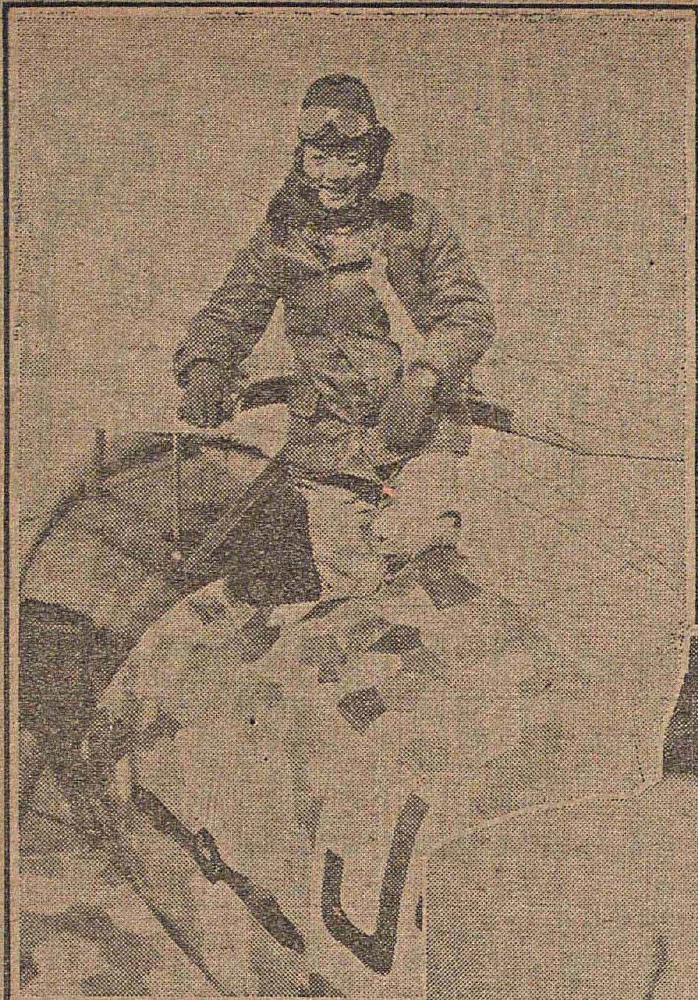
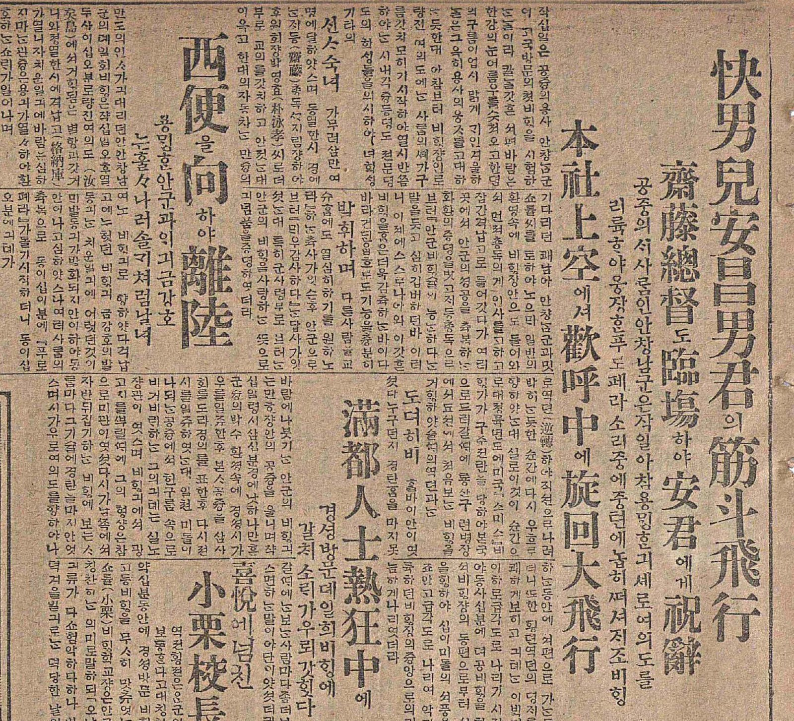
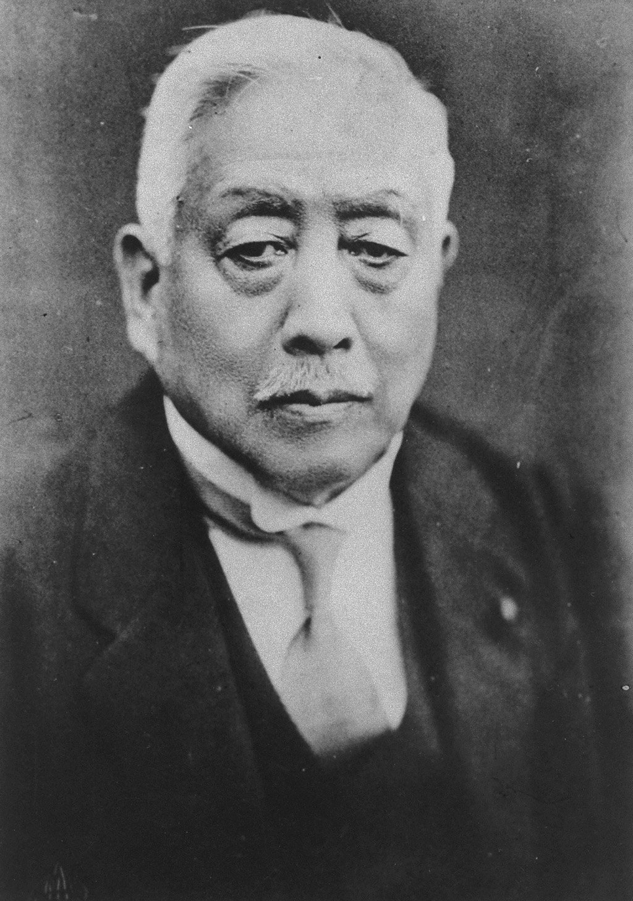
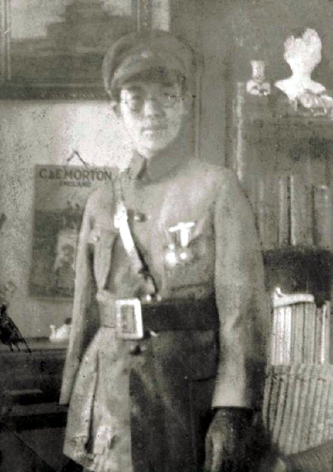

[하늘길, 항공④] 총독의 축사를 받은 여의도의 안창남과 임시정부가 추천한 윈난의 권기옥
1922년 여의도의 5만여 관중과 총독부 선전
1925년 윈난의 첫 여성 비행사
AI경제저널=김갑봉 기자 | 전쟁기념사업회는 2026년 8월의 호국인물로 독립운동가 권기옥을 골랐다. 사업회는 공적 소개에서 그를 1925년 윈난육군항공학교 비행과 졸업생 12명 가운데 유일한 여성이자 한국의 첫 여성 비행사로 적었다.
권기옥과 안창남은 둘 다 1901년에 태어났다. 한 사람은 중국 망명지의 군벌 항공학교에서, 다른 한 사람은 일본 도쿄의 비행학교에서 날개를 얻었다. 두 사람의 길은 날개를 얻은 자리부터 갈린 것이다.
아카바네 공장에서 일본 육군 항공국 면허까지
안창남은 1901년 1월 29일 서울에서 태어나 미동보통학교를 거쳐 1915년 휘문의숙에 들어갔다. 국가보훈부는 그가 1913년 하늘을 나는 비행기를 처음 보고 조선 사람도 배우면 할 수 있다는 확신으로 꿈을 키웠다고 적었다.
1919년 휘문의숙을 그만두고 일본으로 건너간 그는 오사카 자동차학교와 도쿄 아카바네 비행기 제작소를 거쳤다. 1920년 8월 오쿠리비행학교에 들어가 이듬해 3월 졸업했고, 4월부터는 같은 학교 교관으로 일했다.
그는 비행 면허를 일본에서 차례로 땄다. 1921년 8월 제국비행협회의 도쿄~모리오카 우편비행대회에서 3등 면허를 받았고, 1922년 6월 일본 육군 항공국의 2등 비행사 면허를 땄다. 그해 11월 도쿄~오사카 우편 비행을 왕복으로 마쳐 협회유공상 3000원과 항공국 상금 1000원을 받았다.
사이토 총독의 축사가 나온 여의도 고국방문비행
1922년 12월 10일 동아일보사가 초청한 고국방문대비행이 여의도에서 열렸다. 각지에서 모여든 5만여명이 지켜보는 가운데 안창남은 금강호를 몰고 서울 장안을 한 바퀴 돈 뒤 여의도 상공에서 고등비행을 펼쳤다.
금강호는 오쿠리비행학교 소속의 영국제 단발 쌍엽 1인승이었다. 고국방문비행은 13일까지 서울과 인천 등지에서 이어졌고, 나라 잃은 사람들은 동포가 모는 비행기를 처음으로 고국 하늘에서 올려다봤다.

이튿날 조선총독부 기관지는 3면 머리에 사이토 마코토 총독도 현장에 나와 안창남에게 축사를 건넸다고 실었다. 같은 면에는 신문사 상공을 환호 속에 돌았다는 제목과 함께 조종석의 안창남과 사이토 총독의 사진이 위아래로 실렸다.

최은진은 2016년 논문에서 일본 정부와 조선총독부, 조선군사령부가 식민 통치를 미화하려고 이 비행을 적극 지원했다고 분석했다. 일본 안에서 비행 기술을 익힌 식민지 청년을 내세워 항공 정책과 과학 보급을 선전하려 했기 때문이다.
같은 논문은 1920년대 식민지 조선 민중이 이 비행에 조선 민족 문화생활의 신기원이라는 뜻을 매겼다고 봤다. 총독부가 선전에 쓴 비행이 조선인이 주체가 된 과학대중화운동의 출발점도 됐다는 것이다.

동포가 마련하지 못한 전용기
고국방문비행 뒤 고국에서는 박영효·권동진 등 유지 47명이 후원회를 꾸려 안창남에게 전용기를 마련해 주려고 모금 운동을 벌였다. 모금은 실패했고, 고국방문비행을 마친 그는 전용기 없이 다시 일본으로 돌아갔다.
그는 1923년 6월 일본 민간 비행기 경쟁대회에서 2등을 했고, 7월에는 일본 항공국에서 따로 시험 없이 1등 비행사 면허를 받았다. 그해 9월 간토대지진이 일어났고, 그가 교관으로 있던 오쿠리비행학교는 지진으로 불탔다.
국가보훈부는 그가 고국방문비행과 간토대지진을 겪으며 식민지 조선인으로서 제 처지를 또렷이 깨달았다고 적었다. 1924년 12월경 그는 임시정부의 교통 거점 노릇을 하던 이륭양행의 도움을 받아 중국 상하이에 닿았다.
여운형의 소개로 중국 군벌 항공대에 들어가 펑위샹과 옌시산의 군에서 일한 그는 1928년 신덕영·최양옥 등과 대한독립공명단을 조직했다. 비행학교와 무관학교를 세워 독립군을 기르려 했고, 600여원을 대어 단원들을 국내로 보내 독립운동 자금을 모으려 했다.
그는 1930년 4월 2일 산시성 항공대 비행학교에서 중국인 연습생 60여명을 가르치다 기체 고장으로 추락해 숨졌다. 대한민국 정부는 순국 71년 만인 2001년 그에게 건국훈장 애국장을 추서했다.
임시정부 추천으로 들어간 윈난의 항공학교
권기옥은 안창남보다 18일 이른 1901년 1월 11일 평양에서 태어났다. 숭의여학교의 비밀결사 송죽회에서 독립운동을 시작한 그는 1920년 9월 일제 경찰의 감시를 피해 목선과 어선을 갈아타고 바다를 건너 중국으로 망명했다.
대한민국 임시정부는 그를 윈난육군항공학교에 추천했다. 전쟁기념사업회에 따르면 그는 이영무·장지일·이춘 등 동기생과 함께 1기생으로 들어가 비행 조종술을 익혔다.
다만 입학과 졸업의 달은 기록마다 다르다. 한국민족문화대백과사전은 1923년 12월 입학과 1925년 2월 졸업으로, 전쟁기념사업회는 1923년 4월 입학과 1925년 3월 졸업으로 적었다.

제국의 면허와 망명지의 추천서
안창남의 날개는 일본 육군 항공국의 면허를 달고 사이토 총독의 축사 속에 1922년 겨울 고국 하늘에 떴다. 권기옥의 날개는 대한민국 임시정부의 추천서를 들고 들어간 중국 윈난의 망명지 항공학교에서 돋았다.
두 길은 끝내 같은 쪽을 향했다. 안창남은 중국 군벌 항공대에서 독립군 비행사를 기르려 했고, 권기옥은 1943년 임시정부 군무부 아래 공군설계위원회에 설계위원으로 참여했다. 전쟁기념사업회는 이 위원회가 광복 뒤 공군 창설의 기틀을 마련했다고 적었다.
1922년 여의도의 환호와 1925년 윈난의 졸업장 사이에는 3년 가까운 간격이 있다. 그 사이 안창남은 1923년 받은 일본의 1등 비행사 면허를 쥔 채 1924년 망명을 택했고, 권기옥은 망명지에서 조종간을 잡았다.
참고문헌
- 최은진, 「일제강점기 안창남의 항공독립운동」, 『한국독립운동사연구』 55, 한국독립운동사연구소, 2016, 91~137쪽. DOI 10.15799/kimos.2016..55.003. https://www.kci.go.kr/kciportal/landing/article.kci?arti_id=ART002137985
- 조선총독부 기관지 『매일신보』, 1922년 12월 11일자 3면 「快男兒安昌男君의 筋斗飛行 — 齋藤總督도 臨場하야 安君에게 祝辭」(국립중앙도서관 디지털도서관 제공본, 위키미디어 공용 CNTS-00094174848). https://commons.wikimedia.org/wiki/File:CNTS-00094174848_%E6%AF%8F%E6%97%A5%E7%94%B3%E5%A0%B1_1922-12-11.pdf
- 국가보훈부 나라사랑배움터, 「독립의 영웅 — 안창남」. https://edu.mpva.go.kr/hero/indeDetail.do?heroNo=691
- 전쟁기념사업회, 「2026년 8월 권기옥(權基玉) 독립운동가」, 이달의 호국인물, 2026년 8월 6일. https://www.warmemo.or.kr:8443/Home/H50000/H50100/boardList
- 예지숙, 「안창남」, 한국민족문화대백과사전, 한국학중앙연구원, 2021(최종수정 2022.08.10). https://encykorea.aks.ac.kr/Article/E0035048
- 김성은, 「권기옥」, 한국민족문화대백과사전, 한국학중앙연구원, 2017(최종수정 2026.09.29). https://encykorea.aks.ac.kr/Article/E0006852
[사진 출처]
- [사진1] 『매일신보』 1922년 12월 11일자 3면 사진 「安昌男君飛行大會 (上)안창남군」 부분, 국립중앙도서관 디지털도서관 제공, 위키미디어 공용, 퍼블릭 도메인. https://commons.wikimedia.org/wiki/File:CNTS-00094174848_%E6%AF%8F%E6%97%A5%E7%94%B3%E5%A0%B1_1922-12-11.pdf
- [사진2] 『매일신보』 1922년 12월 11일자 3면 머리기사 부분, 같은 파일, 퍼블릭 도메인.
- [사진3] 촬영자 미상, "Portrait of Saito Makoto (斎藤実, 1858 – 1936)", 일본 국립국회도서관 「근대 일본인의 초상」, 위키미디어 공용, 퍼블릭 도메인. https://commons.wikimedia.org/wiki/File:Makoto_Saito_2.jpg
- [사진4] 촬영자 미상, 「1928年、国民革命軍航空隊時代の権基玉」, 위키미디어 공용 File:Kwon_Ki-ok1928.jpg(공용 기록상 원본 출처: 개인 블로그 게재본), 라이선스 표기 PD-China. https://commons.wikimedia.org/wiki/File:Kwon_Ki-ok1928.jpg
관련기사
- [하늘길, 항공③] 키티호크의 260m와 바가텔의 220m, 라이트 형제와 산투스 뒤몽의 「최초」 논쟁
- [하늘길, 항공②] 안노네 장터의 천 주머니에서 베르사유의 양·오리·수탉까지, 1783년 열기구가 연 하늘길
저작권자 © AI경제저널 무단전재 및 재배포, AI학습 및 활용 금지